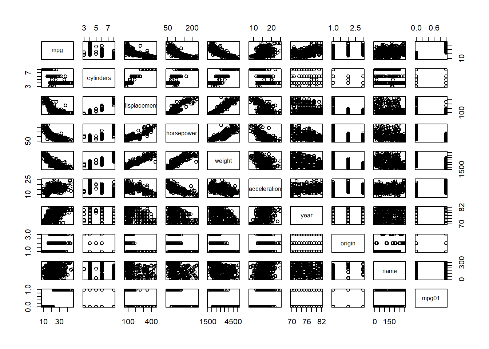
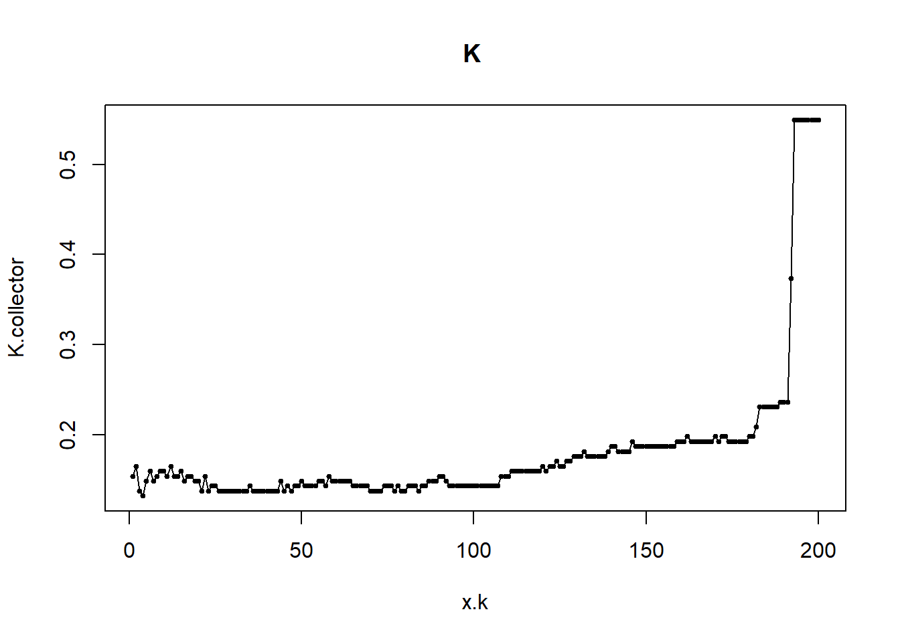
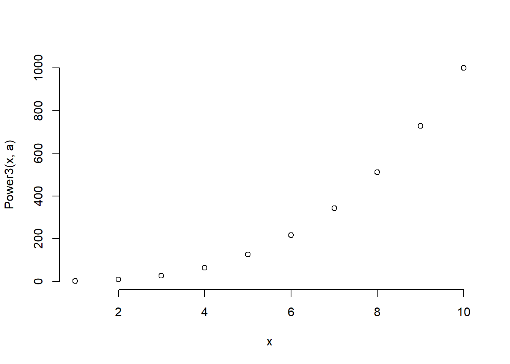

Solution Day 3 Lab - Classification
Philipp Broniecki and Lucas Leemann – Machine Learning 1K
You will need to load the core library for the course textbook:
# clear workspace
rm(list=ls())
library(ISLR)Q1
In this problem, you will develop a model to predict whether a given car gets high or low gas mileage based on the Auto dataset from the ISLR package.
- Create a binary variable,
mpg01, that contains a 1 ifmpgcontains a value above its median, and a 0 ifmpgcontains a value below its median. You can compute the median using themedian()function. Note you may find it helpful to use thedata.frame()function to create a single data set containing bothmpg01and the otherAutovariables. Type?Autoto get the codebook of the dataset.
library(ISLR)
summary(Auto)## mpg cylinders displacement horsepower
## Min. : 9.00 Min. :3.000 Min. : 68.0 Min. : 46.0
## 1st Qu.:17.00 1st Qu.:4.000 1st Qu.:105.0 1st Qu.: 75.0
## Median :22.75 Median :4.000 Median :151.0 Median : 93.5
## Mean :23.45 Mean :5.472 Mean :194.4 Mean :104.5
## 3rd Qu.:29.00 3rd Qu.:8.000 3rd Qu.:275.8 3rd Qu.:126.0
## Max. :46.60 Max. :8.000 Max. :455.0 Max. :230.0
##
## weight acceleration year origin
## Min. :1613 Min. : 8.00 Min. :70.00 Min. :1.000
## 1st Qu.:2225 1st Qu.:13.78 1st Qu.:73.00 1st Qu.:1.000
## Median :2804 Median :15.50 Median :76.00 Median :1.000
## Mean :2978 Mean :15.54 Mean :75.98 Mean :1.577
## 3rd Qu.:3615 3rd Qu.:17.02 3rd Qu.:79.00 3rd Qu.:2.000
## Max. :5140 Max. :24.80 Max. :82.00 Max. :3.000
##
## name
## amc matador : 5
## ford pinto : 5
## toyota corolla : 5
## amc gremlin : 4
## amc hornet : 4
## chevrolet chevette: 4
## (Other) :365attach(Auto)
mpg01 <- ifelse( mpg > median(mpg), yes = 1, no = 0)
Auto <- data.frame(Auto, mpg01)- Explore the data graphically in order to investigate the association between
mpg01and the other features. Which of the other features seem most likely to be useful in predictingmpg01? Scatterplots and boxplots may be useful tools to answer this question. Describe your findings.
cor(Auto[,-9])## mpg cylinders displacement horsepower weight
## mpg 1.0000000 -0.7776175 -0.8051269 -0.7784268 -0.8322442
## cylinders -0.7776175 1.0000000 0.9508233 0.8429834 0.8975273
## displacement -0.8051269 0.9508233 1.0000000 0.8972570 0.9329944
## horsepower -0.7784268 0.8429834 0.8972570 1.0000000 0.8645377
## weight -0.8322442 0.8975273 0.9329944 0.8645377 1.0000000
## acceleration 0.4233285 -0.5046834 -0.5438005 -0.6891955 -0.4168392
## year 0.5805410 -0.3456474 -0.3698552 -0.4163615 -0.3091199
## origin 0.5652088 -0.5689316 -0.6145351 -0.4551715 -0.5850054
## mpg01 0.8369392 -0.7591939 -0.7534766 -0.6670526 -0.7577566
## acceleration year origin mpg01
## mpg 0.4233285 0.5805410 0.5652088 0.8369392
## cylinders -0.5046834 -0.3456474 -0.5689316 -0.7591939
## displacement -0.5438005 -0.3698552 -0.6145351 -0.7534766
## horsepower -0.6891955 -0.4163615 -0.4551715 -0.6670526
## weight -0.4168392 -0.3091199 -0.5850054 -0.7577566
## acceleration 1.0000000 0.2903161 0.2127458 0.3468215
## year 0.2903161 1.0000000 0.1815277 0.4299042
## origin 0.2127458 0.1815277 1.0000000 0.5136984
## mpg01 0.3468215 0.4299042 0.5136984 1.0000000pairs(Auto) # doesn't work well since mpg01 is 0 or 1
cylinders, weight, displacement, horsepower (and mpg itself)
- Split the data into a training set and a test set.
First, we normalize our varibles
Auto <- data.frame(mpg01, apply(cbind(cylinders, weight, displacement, horsepower, acceleration),
2, scale), year)We use the %% operator to split the data set into observations with even and uneven years. Check here for a description of different R operators.
train <- (year %% 2 == 0) # if the year is even (%%)
test <- !train
Auto.train <- Auto[train,]
Auto.test <- Auto[test,]
mpg01.test <- mpg01[test]- Perform LDA on the training data in order to predict
mpg01using the variables that seemed most associated withmpg01in (b). What is the test error of the model obtained?
# LDA
library(MASS)
lda.fit <- lda(mpg01 ~ cylinders + weight + displacement + horsepower,
data = Auto, subset = train)
lda.pred <- predict(lda.fit, Auto.test)
mean(lda.pred$class != mpg01.test)## [1] 0.126373612.6% test error rate.
- Perform logistic regression on the training data in order to predict
mpg01using the variables that seemed most associated withmpg01in (b). What is the test error of the model obtained?
# Logistic regression
glm.fit <- glm(mpg01 ~ cylinders + weight + displacement + horsepower,
data = Auto,
family = binomial,
subset = train)
glm.probs <- predict(glm.fit, Auto.test, type = "response")
glm.pred <- rep(0, length(glm.probs))
glm.pred[glm.probs > 0.5] <- 1
mean(glm.pred != mpg01.test)## [1] 0.120879112.1% test error rate.
- Perform KNN on the training data, with several values of K, in order to predict
mpg01. Use only the variables that seemed most associated withmpg01in (b). What test errors do you obtain? Which value of K seems to perform the best on this data set?
library(class)
train.X <- cbind(cylinders, weight, displacement, horsepower)[train,]
test.X <- cbind(cylinders, weight, displacement, horsepower)[test,]
train.mpg01 <- mpg01[train]
set.seed(1)
# KNN (k=1)
knn.pred <- knn(train.X, test.X, train.mpg01, k = 1)
mean(knn.pred != mpg01.test)## [1] 0.1538462# KNN (k=10)
knn.pred <- knn(train.X, test.X, train.mpg01, k = 10)
mean(knn.pred != mpg01.test)## [1] 0.1648352# KNN (k=100)
knn.pred <- knn(train.X, test.X, train.mpg01, k = 100)
mean(knn.pred != mpg01.test)## [1] 0.1428571k=1, 15.4% test error rate. k=10, 16.5% test error rate. k=100, 14.3% test error rate. K of 100 seems to perform the best. 100 nearest neighbors.
- We can find the optimal value for K by trying all K from 1 to 200. We will run a loop and save the test error for every value of K.
K.collector <- rep(NA, 200)
for (k.try in 1:200){
knn.pred <- knn(train.X, test.X, train.mpg01, k = k.try)
K.collector[k.try] <- mean(knn.pred != mpg01.test)
}
x.k <- c(1:200)
plot(x.k,K.collector, type="o", pch=19, cex=0.5, main="K ")
It is hard to see the optimal value of K for us. We can inspect the error ourselves:
which.min(K.collector)## [1] 4Here, it seems to be the case that K=4 is the best. We will see tomorrow how we can ensure that this does not just depend on the specific trianing and test data we created here.
Q2
This problem involves writing functions.
- Write a function,
Power(), that prints out the result of raising 2 to the 3rd power. In other words, your function should compute \(2^3\) and print out the results.
Hint: Recall that \(x^a\) raises x to the power a. Use the print() function to output the result.
Power <- function() {
2^3
}
print(Power())## [1] 8- Create a new function,
Power2(), that allows you to pass any two numbers,xanda, and prints out the value ofx^a. You can do this by beginning your function with the line:
Power2 <- function(x,a) {You should be able to call your function by entering, for instance,
Power2(3,8)on the command line. This should output the value of \(3^8\), namely, 6,561.
Power2 <- function(x, a) {
x^a
}
Power2(3,8)## [1] 6561- Using the
Power2()function that you just wrote, compute \(10^3\), \(8^{17}\), and \(131^3\).
Power2(10, 3)## [1] 1000Power2(8, 17)## [1] 2.2518e+15Power2(131, 3)## [1] 2248091- Now create a new function,
Power3(), that actually returns the resultx^aas an R object, rather than simply printing it to the screen. That is, if you store the valuex^ain an object called result within your function, then you can simplyreturn()this result, using the following line:
return(result)The line above should be the last line in your function, before the } symbol.
Power3 <- function(x, a) {
result <- x^a
return(result)
}- Now using the
Power3()function, create a plot of \(f(x)=x^2\). The \(x\)-axis should display a range of integers from 1 to 10, and the \(y\)-axis should display \(x^2\). Label the axes appropriately, and use an appropriate title for the figure. Consider displaying either the \(x\)-axis, the \(y\)-axis, or both on the log-scale. You can do this by usinglog="x",log="y", orlog="xy"as arguments to theplot()function.
x <- 1:10
plot(x, Power3(x, 2),
log="xy", ylab="Log of y = x^2", xlab="Log of x",
main="Log of x^2 versus Log of x", bty = "n")
- Create a function,
PlotPower(), that allows you to create a plot ofxagainstx^afor a fixedaand for a range of values ofx. For instance, if you call
PlotPower(1:10, 3)then a plot should be created with an \(x\)-axis taking on values \(1,2,...,10\), and a \(y\)-axis taking on values \(1^3,2^3,...,10^3\).
PlotPower <- function(x, a) {
plot(x, Power3(x, a), bty = "n")
}
PlotPower(1:10, 3)